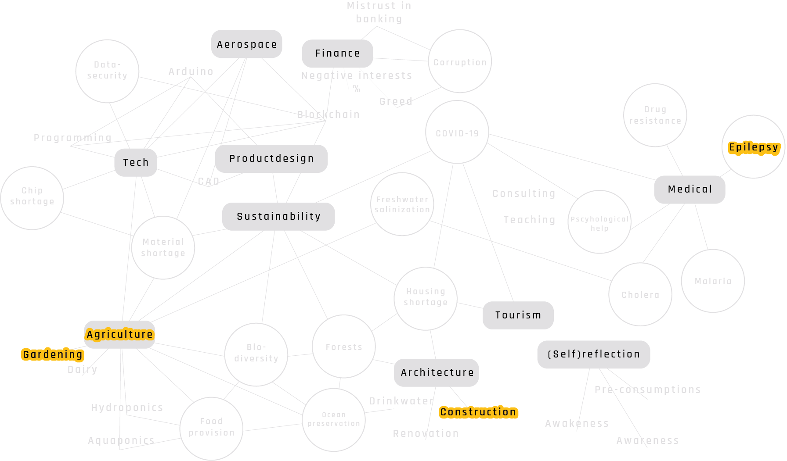

Bootcamp
The past week activities were centered around the question: "What is your fight?"
Well, what is my fight?.. To find that out I updated a map/mindmap I made in June last year of my interests and interconnect them to find out where that fight was hiding.
In the first session I had them narrowed down to a selection of interest but it didn't seem really clarifying and authentic to me when it passed and faced the dialogues between classmates. During these sessions I got to know most of their interesting stories and motivations which varied from being fed up with plastic waste to pursueing emotional intelligent design, from finding peace to creating bridges between people through design. Obviously, all of them, great stories and really helpful in guiding next step of finding and defining my fight.
On Friday we did a tour through Poblenou (which is the industrial neighbourhood where IAAC is located) and got introduced to some local, sustainable initiatives: Poblenou Urban District , TransfoLAB BCN, BiciHub and ConnectHort (will be called Bioma soon). Saturday I went back to ConnectHort for preparing clay to cover the walls of a biobuilt cabin, which was something equally fun as informative.
Yesterday we did some ideation excersises on Miro platform and I sat down with one of the course-leaders to check where the fight was located now and, for the time being, it got pretty clear. The topics marked in yellow will be the main focus area for now.
"So this will 'kill' some of the chaos around the fight than right?"
"This will create way more chaos."
Great, can't wait.
Links: IAAC My Instagram Page
By Ruben de Haan on October 10th, 2021
